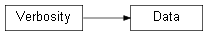

Class¶
-
class
Data(name=None, data_X=None, data_Y=None, dtype=None, pars_central=None, pars_pos_poi=None, pars_pos_nuis=None, pars_labels=None, pars_bounds=None, test_fraction=None, load_on_RAM=False, output_folder=None, input_file=None, verbose=True)[source]¶ This class contains the
Dataobject representing the dataset used for training, validating and testing the DNNLikelihood. It can be creaded both feeding X and Y data or by loading an existingDataobject.
Attributes summary
Methods summary
Method |
Short description |
|---|---|
|
|
|
|
Inheritance diagram
